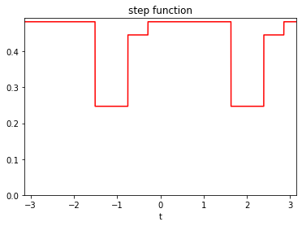
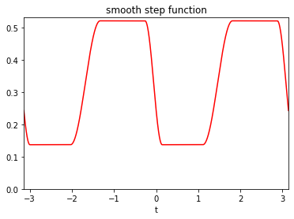
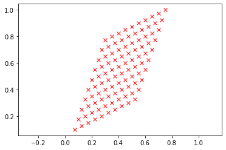

afbf.Classes package¶
Submodules¶
afbf.Classes.Field module¶
Module for the management of anisotropic fractional Brownian fields.
Code author: Frédéric Richard <frederic.richard_at_univ-amu.fr>
-
afbf.Classes.Field.BETA_H(coord, alp1, alp2, H)¶ Approximation of an integral useful for the computation of semi-variogram.
The approximated integral is defined as:
\[I(x, \alpha_1, \alpha_2, H) = 2^{-2H} \int_{\alpha_1}^{\alpha_2} \vert \cos(\arg(x) - \theta) \vert^{2H}.\]- Parameters
coord (coordinates) – Coordinates \(x\).
alp1, alp2 (float) – Angles in \([-\pi/2, \pi/2]\).
:param float H : Hurst index in \((0, 1)\).
- Returns
Values of the integral for each coordinate \(x\).
- Return type
-
class
afbf.Classes.Field.field(fname='fbf', topo=None, hurst=None)¶ Bases:
objectThis class handles Anisotropic Fractional Brownian Fields (AFBF).
An AFBF is a Gaussian random field with stationary increments whose probabibility distribution is characterized by a density of the form [1, 2, 3, 4, 5, 6, 7]
\[v(x) = \frac{1}{2} \int_{-\pi/2}^{\pi/2} \tau(\theta) \left\vert \langle x, (\cos(\theta), \sin(\theta)) \rangle \right\vert^{2\beta(\theta)} d\theta\]where \(\tau\) and \(\beta\) are non-negative \(\pi\)-periodic functions depending both on the direction \(\arg(w)\) of the frequency \(w\).
Functions \(\tau\) and \(\beta\) are called the topothesy function and the Hurst function, respectively.
- Parameters
fname (str) – Name of the field.
topo (perfunction) – The topothesy function \(\tau\) of the field.
hurst (perfunction) – The Hurst function \(\beta\) of the field.
order (int) – The order of the field (used for the extension to intrinsic field [3, 4, 5, 6, 7, 12]).
H (scalar) – The Hurst index of the field.
hurst_argmin_len (scalar) – The lenght of the argmin set of the Hurst function.
Hmax (scalar) – The maximum of the Hurst function.
hurst_aniso_index (scalar) – An anisotropy index derived from the lenght of the argmin set of the Hurst function.
aniso_indices_topo (:ref:`ndarray) – Measures of deviation of the topothesy function.
aniso_indices_hurst (ndarray) – Measures of deviation of the Hurst function.
aniso_sharpness_topo (ndarray) – Measures of sharpness of the topothesy function.
aniso_sharpness_hurst (ndarray) – Measures of sharpness of the Hurst function.
aniso_indices_mixed_1 (ndarray) – Measures of deviations of a function combining the topothesy and Hurst functions.
aniso_indices_mixed_2 – Measures of deviations of another function combining the topothesy and Hurst functions.
aniso_sharpness_mixed_2 (ndarray) – Measures of sharpness of another function combining the topothesy and Hurst functions.
Constructor method.
Set the random field model either in a predefined or a customized mode.
In customized mode, the field is defined with topothesy and Hurst functions given in arguments as objects of the class perfunction.
In predefined mode, the topothesy and Hurst functions are generated at random according to the type of field indicated in fname. Available predefined fields are:
- ‘fbf’:
standard fractional Brownian field (default).
- ‘efbf’:
elementary fractional Brownian field.
- ‘afbf’:
Normalized afbf with a step Hurst function.
- ‘afbf-smooth’:
Normalized afbf with a smooth step Hurst function.
- ‘afbf-Fourier’:
afbf with a Fourier topothesy and a step Hurst function.
- ‘afbf-smooth-Fourier’:
afbf with a Fourier topothesy and a smooth step Hurst function.
- Parameters
fname (str, optional) – Name of the field. The default is ‘fbf’.
topo (perfunction, optional) – Topothesy function. Default is None.
hurst (perfunction, optional) – Topothesy function. Default is None.
- Returns
Attributes fname, order, topo, hurst.
-
ChangeOrder(neworder)¶ Change the order of the intrinsic field.
- Parameters
neworder (int) – The new order of the field.
- Returns
Attributes order, hurst.
Warning
This function is only available when the Hurst function is a step function.
-
CheckValidity()¶ Check the validity of field.
- Returns
True if attributes are properly defined, and false otherwise.
- Return type
boolean
-
ComputeFeatures()¶ Compute several features of the field.
- Returns
Attributes H, hurst_argmin_length, hurst_index_aniso, aniso_indices_topo, aniso_indices_hurst, aniso_sharpness_topo, aniso_sharpness_hurst, aniso_indices_mixed1, aniso_indices_mixed2, aniso_sharpness_mixed1, aniso_sharpness_mixed2.
-
ComputeSemiVariogram(lags)¶ Compute values of the semi-variogram of the field at points given by lags.
- Parameters
lags (coordinates) – Lags at which to compute the semi-variogram.
- Returns
Attribute vario.
-
DisplayParameters(nfig=1)¶ Plot the graph of the topothesy and Hurst functions of the field, and the semi-variogram (if available).
- Parameters
nfig (int, optional) – The index of the figure. Default to 1.
-
FindOrder()¶ Find the order of the intrinsic field.
- Returns
Attribute order.
- Return type
int.
Warning
This function is only available when the Hurst function is a step function.
-
NormalizeModel()¶ Normalize the model.
Note
This function can only be applied if the Hurst function is a step function.
-
SetModel(fname='fbf', topo=None, hurst=None)¶ See Constructor method.
afbf.Classes.PeriodicFunction module¶
Module for the management of non-negative \(\pi\)-periodic functions.
Code author: Frédéric Richard <frederic.richard@univ-amu.fr>
-
afbf.Classes.PeriodicFunction.DiscreteFunctionDescription(values, delta)¶ Compute some features to describe a function represented in a dicrete way by successive values in a vector.
- Parameters
- Returns
stats, deviation and sharpness:
basics statistics of the function (min, max, mean, median).
measures of deviations (standard deviation, absolute deviations to the mean and the median).
measures of sharpness computed from discrete derivative (discrete tv-norm, maximum of absolute discrete derivative).
- Return type
list of ndarray
-
class
afbf.Classes.PeriodicFunction.perfunction(ftype='step-smooth', param=0, fname='noname')¶ Bases:
objectThis class handles \(\pi\)-periodic positive parametric functions.
The available function representations are
the representation in a Fourier basis,
a representation by step functions,
a representation by smoothed step functions.
In the Fourier representation, the function is defined as
\[f(t) = a_0 + \sum_{m=1}^M a_{m, 1} \cos(2mt)+a_{m, 2} \sin(2mt),\]where \(a_0\) and \(a_{m, k}\) are real parameters.
A step function is defined as
\[f(t) = a_0 \left( \delta_{[-\frac{\pi}{2}, \psi_1)}(t) + \delta_{[\psi_{M+1}, \frac{\pi}{2})}(t) \right) + \sum_{m=1}^M a_i \delta_{[\psi_i, \psi_{i+1})}(t),\]where \(a_i\) are non-negative parameters, and \(\psi_i\) are ordered angles in \([-\frac{\pi}{2}, \frac{\pi}{2})\).
The definition of step functions can be adapted to include smooth transitions between intervals where the function is constant.
Note
Representations are defined by an expansion of the form
\[f(t) = \sum_{m=0}^M \alpha_m B_m(t)\]for some coefficients \(\alpha_m\) and basis functions \(B_m\).
- Example
Definition of a function using the Fourier representation with \(M=3\) (i.e. 7 coefficients).
from afbf import perfunction f1 = perfunction('Fourier', 3, 'Fourier') f1.Display(1)

- Example
Definition of a function with three steps.
from afbf import perfunction f2 = perfunction('step', 3, 'step function') f2.Display(2)
- Example
Definition of a smooth function with two steps.
from afbf import perfunction f3 = perfunction('step-smooth', 2, 'smooth step function') f3.Display(3)
- Example
Definition of a step function with a ridge.
from afbf import perfunction f4 = perfunction('ridge-step', 1, 'ridge function') f4.Display(4)

- Parameters
fname (str) – Name of the function.
ftype (str) –
Type of the function representation. Some predefined type are available:
’step’: step function.
’step-constant’: constant function.
’step-ridge’: a step function with ridges.
’step-smooth’: smooth step function.
’Fourier’: Fourier representation.
fparam (ndarray) – Representation parameters \(\alpha_m\).
finter (ndarray) – Interval bounds \(\psi_i\) for a step function.
steptrans (boolean) – True if there are transitions between step.
trans (int) – indicate where step transitions are on even or odd intervals ({0, 1}).
basis (ndarray) – an array where values of the mth basis function \(B_m\) of the representation are on the mth row.
t (ndarray) – positions at which to evaluate the function.
stats (ndarray) – Basics statistics; min, max, mean, median of the function.
dev (ndarray) – Measures of deviations of the function; standard deviation, absolute deviations to the mean and to the median.
sharpness (ndarray) – Measures of sharpness computed on discrete function derivative (discrete tv-norm, maximum of absolute discrete derivative).
smode – Simulation mode of a step function (see SetStepSampleMode).
translate (float) – Translation to be applied to the function (defaut to 0).
rescale (float) – Factor of a rescaling to be applied to the function.
Constructor method.
Define a positive periodic function with a specific representation.
- Parameters
ftype (str) –
A predefined function representation among - ‘step’, - ‘step-constant’, - ‘step-ridge’, - ‘step-smooth’, - and ‘Fourier’.
The default is ‘step-smooth’.
param (int (, optional)) – The number of parameters. Default to 0.
fname (str (, optional)) – The name of the function. Default ‘noname’.
-
ApplyTransforms(translate=None, rescale=None)¶ Apply translation and/or rescaling transform to the function.
- Parameters
translate (float) – Translation.
rescale (float) – scaling factor (must be positive).
- Returns
Attributes translate, rescale.
-
ChangeParameters(fparam=None, finter=None)¶ Change parameters of the function while keeping its representation.
If parameters are not given, the parameters are changed at random.
-
CheckValidity()¶ Check the validity of the periodic function.
- Returns
True if attributes are properly defined.
- Return type
boolean
-
ComputeFeatures(m=10000)¶ Compute some features describing the function.
- Parameters
m (int, optional) – Number of discrete positions to evaluate the function. Default to 10000.
- Returns
Precision of the evaluation.
- Rtypes
scalar
- Returns
Attributes stats, dev, sharpness.
-
ComputeFourierBasis()¶ Compute basis functions of the Fourier representation.
- Returns
Attribute basis.
-
ComputeStepBasis()¶ Compute basis functions of a representation by a step function at positions given in attribute t.
- Returns
Attribute basis.
-
Display(nfig=1)¶ Plot the graph of the function.
- Parameters
nfig (int, optional) – The index of the figure. Default to 1.
-
Evaluate(t=None)¶ Evaluate the function at some positions.
- Parameters
t (ndarray, optional.) – Positions at which the function is computed.
- Returns
Attribute values.
Note
If parameter t is omitted, the function is evaluated at points of the previous call of the function.
-
InitFourierFunction(mode='init', M=3)¶ Define or update the Fourier representation of a periodic function.
- Parameters
mode (str, optional) – The utilisation mode (‘init’, ‘update’). Use the ‘init’ mode to set the function representation at random (default), or ‘update’ to change its parameters at random. The default is ‘init’.
M (int, optional) – M * 2 + 1 is the number of Fourier coefficients. The default is 3.
- Returns
Attribute fparam.
-
InitStepFunction(ftype='step-constant', mode='init', M=2)¶ Define or update a step function at random.
- Parameters
ftype (str, optional) – The type of step function. (‘step’,’step-constant’,’step-ridge’,’step-smooth’). The default is ‘step-constant’.
mode (str, optional) – The utilisation mode (‘init’, ‘update’). The default is ‘init’.
M (int, optional) – Number of steps. The default is 2.
- Returns
Attributes fparam, finter.
-
SampleFourierCoefficients()¶ Sample the Fourier coefficients.
- Returns
Attribute fparam.
-
SampleStepConstants(k=- 1)¶ Sample constants within (0, 1).
- Parameters
k (int, optional) – index where to put the minimal value. The default is -1.
- Returns
Attribute fparam.
Note
The simulation of the step constants depends on the attribute smode:
- smode[0]=’unif’:
step values are sampled from a uniform distribution on (smode[1], smode[2]).
- smode[0]=’unifmin’:
the minimal step value is sampled from a uniform distribution on (smode[1], smode[2]).
- smode[0]=’unifrange’:
the step value range is sampled from a uniform distribution on (0, smode[2] - smode[1]).
The mode of simulation can be changed using SetStepSampleMode.
-
SampleStepIntervals()¶ Sample interval bounds of a step function.
- Returns
The index of the interval whose size is uniformly sampled.
- Return type
int
Note
The simulation of the step constants depends on the attribute smode:
- smode[3]=’unif’:
the bounds are uniformly sampled over the interval (-pi/2, pi/2).
- smode[3]=’nonunif’:
the bounds are sampled so that the size of one of them is uniformly sampled.
smode[4] is a minimal interval size.
The mode of simulation can be changed using SetStepSampleMode.
-
SetStepSampleMode(mode_cst='unif', a=0, b=1, mode_int='unif', d=0)¶ Set the simulation mode for sampling parameters of a step function.
- Parameters
mode_cst (str, optional) –
The mode of simulation of constants \(a_m\):
- if mode_cst = ‘unif’:
step values are sampled from a uniform distribution on (a, b).
- if mode_cst = ‘unifmin’:
the minimal step value is sampled from a uniform distribution on (a, b).
- if mode_cst = ‘unifrange’:
the step value range is sampled from a uniform distribution on (a, b).
The default is ‘unif’.
a (float, optional) – lower bound. The default is 0.
b (float, optional) – upper bound. The default is 1.
mode_int (str, optional) –
The mode of simulation of interval bounds \(\psi_m\):
- if mode_int=’unif’:
the bounds are uniformly sampled over the interval (-pi/2, pi/2).
- if mode_int=’nonunif’:
the bounds are sampled so that the size of one of them is uniformly sampled.
The default is ‘unif’.
d (float, optional) – Minimal value of interval size. The default is 0.
- Returns
Attribute smode.
-
SetUniformStepInterval()¶ Set uniform step intervals.
- Returns
Attribute finter, trans.
-
ShowParameters()¶ Show the parameters of the function.
-
afbf.Classes.PeriodicFunction.rand(d0, d1, ..., dn)¶ Random values in a given shape.
Note
This is a convenience function for users porting code from Matlab, and wraps random_sample. That function takes a tuple to specify the size of the output, which is consistent with other NumPy functions like numpy.zeros and numpy.ones.
Create an array of the given shape and populate it with random samples from a uniform distribution over
[0, 1).- d0, d1, …, dnint, optional
The dimensions of the returned array, must be non-negative. If no argument is given a single Python float is returned.
- outndarray, shape
(d0, d1, ..., dn) Random values.
random
>>> np.random.rand(3,2) array([[ 0.14022471, 0.96360618], #random [ 0.37601032, 0.25528411], #random [ 0.49313049, 0.94909878]]) #random
-
afbf.Classes.PeriodicFunction.randn(d0, d1, ..., dn)¶ Return a sample (or samples) from the “standard normal” distribution.
Note
This is a convenience function for users porting code from Matlab, and wraps standard_normal. That function takes a tuple to specify the size of the output, which is consistent with other NumPy functions like numpy.zeros and numpy.ones.
Note
New code should use the
standard_normalmethod of adefault_rng()instance instead; please see the random-quick-start.If positive int_like arguments are provided, randn generates an array of shape
(d0, d1, ..., dn), filled with random floats sampled from a univariate “normal” (Gaussian) distribution of mean 0 and variance 1. A single float randomly sampled from the distribution is returned if no argument is provided.- d0, d1, …, dnint, optional
The dimensions of the returned array, must be non-negative. If no argument is given a single Python float is returned.
- Zndarray or float
A
(d0, d1, ..., dn)-shaped array of floating-point samples from the standard normal distribution, or a single such float if no parameters were supplied.
standard_normal : Similar, but takes a tuple as its argument. normal : Also accepts mu and sigma arguments. Generator.standard_normal: which should be used for new code.
For random samples from \(N(\mu, \sigma^2)\), use:
sigma * np.random.randn(...) + mu>>> np.random.randn() 2.1923875335537315 # random
Two-by-four array of samples from N(3, 6.25):
>>> 3 + 2.5 * np.random.randn(2, 4) array([[-4.49401501, 4.00950034, -1.81814867, 7.29718677], # random [ 0.39924804, 4.68456316, 4.99394529, 4.84057254]]) # random
afbf.Classes.RandomProcess module¶
Module for the management of random processes.
Code author: Frédéric Richard <frederic.richard_at_univ-amu.fr>
Note
This version only deals with the fractional Brownian motion.
-
class
afbf.Classes.RandomProcess.process(type='fbm', param=- 1)¶ Bases:
objectThis class handles random processes, with a focus on fractional Brownian motions (FBM).
A FBM is a Gaussian random process with stationary increments. Its properties (regularity, order of self-similarity, …) are determined by a single parameter \(H \in (0, 1)\), called the Hurst index.
- Example
Simulation of a FBF with Hurst index \(H=0.2\) at times \(\{1, \cdots, T\}\).
from afbf import process model = process('fbm', param=0.2) model.Simulate(T=1000) model.Display(1)

:param ndarray autocov: The autocovariance of the process.
:param ndarray spect: The Fourier spectrum of the autocovariance.
:param ndarray vario: The semi-variogram of the process.
:param ndarray y: The values of a simulation of the process.
Constructor method.
- Parameters
type (str, optional) – Type of processes (“fbm”). The default is ‘fbm’, the only process implemented in this package version.
param (float or ndarray, optional) – Parameters of the process. The default is -1, meaning that it is uniformly sampled.
-
ComputeAutocovariance(T=10)¶ - Compute the autocovariance of the process increments
at uniformly-spaced lags \(\{0, 1, \cdots, T\}\).
- Parameters
T (int) – The maximal lag. Default is 10.
- Returns
Attribute autocov.
-
ComputeAutocovarianceSpectrum()¶ Compute the Fourier spectrum of the periodized autocovariance.
- Returns
Attribute spect.
-
ComputeFBMAutocovariance(T)¶ Compute the autocovariance of the increments of a fractional Brownian motion of Hurst index \(H\) at uniformly-spaced lags \(\{0, 1, \cdots, T-1 \}\).
- Parameters
T (int) – The maximal lag.
- Returns
Attribute autocov.
-
ComputeFBMSemiVariogram(lags, logvario=0)¶ Compute the semi-variogram of the fbm at lags given in lags.
:param ndarray lags: Lags where to compute the variogram. :param logvario: if logvario>0, a log semi-variogram is computed.
The default is 0.
- Returns
Attribute vario.
-
ComputeSemiVariogram(lags, logvario=0)¶ Compute the semi-variogram of the process at lags given in lags.
:param ndarray lags: Lags where to compute the variogram.
- Parameters
logvario (int, optional) – if logvario>0, a log semi-variogram is computed. The default is 0.
- Returns
Attribute vario.
-
Display(nfig=1)¶ Display the realization of the process.
- Parameters
nfig (int, optional) – Figure index. The default is 1.
-
ExtendFBM(M=5)¶ Extend the definition of a FBM to a non self-similar process.
- Parameters
M (int, optional) – The number of parameters used for defining the extension function. The default is 5.
- Example
Simulation of an extended FBF with Hurst index \(H=0.2\) at times \(\{1, \cdots, T\}\).
from afbf import process model = process('fbm', param=0.2) model.ExtendFBM() model.Simulate(T=1000) model.Display(1)

-
IntegrateProcess(order)¶ Integrate the process at a given order.
- Parameters
order (int) – The order of integration.
- Returns
Attribute y.
-
Simulate(T)¶ - Simulate the process at uniformly-spaced positions
\(\{0, 1, \cdots, T\}\).
- Parameters
T (int) – The maximal lag.
- Returns
Attribute y.
-
Simulate_CirculantCovarianceMethod(T)¶ Simulate process increments at positions \(\{0, 1, \cdots, T\}\).
Note
The method was developed by Wood and Chan. It is described in [16].
- Parameters
T (int) – The maximal lag.
- Returns
Attribute y.
-
afbf.Classes.RandomProcess.rand(d0, d1, ..., dn)¶ Random values in a given shape.
Note
This is a convenience function for users porting code from Matlab, and wraps random_sample. That function takes a tuple to specify the size of the output, which is consistent with other NumPy functions like numpy.zeros and numpy.ones.
Create an array of the given shape and populate it with random samples from a uniform distribution over
[0, 1).- d0, d1, …, dnint, optional
The dimensions of the returned array, must be non-negative. If no argument is given a single Python float is returned.
- outndarray, shape
(d0, d1, ..., dn) Random values.
random
>>> np.random.rand(3,2) array([[ 0.14022471, 0.96360618], #random [ 0.37601032, 0.25528411], #random [ 0.49313049, 0.94909878]]) #random
-
afbf.Classes.RandomProcess.randn(d0, d1, ..., dn)¶ Return a sample (or samples) from the “standard normal” distribution.
Note
This is a convenience function for users porting code from Matlab, and wraps standard_normal. That function takes a tuple to specify the size of the output, which is consistent with other NumPy functions like numpy.zeros and numpy.ones.
Note
New code should use the
standard_normalmethod of adefault_rng()instance instead; please see the random-quick-start.If positive int_like arguments are provided, randn generates an array of shape
(d0, d1, ..., dn), filled with random floats sampled from a univariate “normal” (Gaussian) distribution of mean 0 and variance 1. A single float randomly sampled from the distribution is returned if no argument is provided.- d0, d1, …, dnint, optional
The dimensions of the returned array, must be non-negative. If no argument is given a single Python float is returned.
- Zndarray or float
A
(d0, d1, ..., dn)-shaped array of floating-point samples from the standard normal distribution, or a single such float if no parameters were supplied.
standard_normal : Similar, but takes a tuple as its argument. normal : Also accepts mu and sigma arguments. Generator.standard_normal: which should be used for new code.
For random samples from \(N(\mu, \sigma^2)\), use:
sigma * np.random.randn(...) + mu>>> np.random.randn() 2.1923875335537315 # random
Two-by-four array of samples from N(3, 6.25):
>>> 3 + 2.5 * np.random.randn(2, 4) array([[-4.49401501, 4.00950034, -1.81814867, 7.29718677], # random [ 0.39924804, 4.68456316, 4.99394529, 4.84057254]]) # random
afbf.Classes.SpatialData module¶
Module for the management of spatial data.
Code author: Frédéric Richard <frederic.richard_at_univ-amu.fr>
-
class
afbf.Classes.SpatialData.coordinates(N=- 1)¶ Bases:
objectThis class handles a set of coordinates in the plane.
Coordinates are pairs (x, y) of integers referring to a plane position (x / N, y / N). Set of coordinates can either be on a uniform grid or at arbitrary positions.
A uniform grid is defined as \([\![1, N]\!] \times [\![1, N]\!]\). It can also be signed, in which case it is of the form \([\![1, N]\!] \times [\![-N, N]\!]\).
- Example
Define and display a grid of size 10 x 10.
from afbf import coordinates coord = coordinates(10) coord.Display(1)

- Parameters
xy (ndarray of shape (ncoord, 2)) – set of Cartesian coordinates; xy[m, :] are the mth coordinates.
N (int) – Factor to be applied to coordinates.
Nx (int) – Grid dimension: number of x coordinates.
Ny (int) – Grid dimension: number of y coordinates.
grid (bool) – True if grid coordinates.
Constructor method.
- Parameters
N (int, optional If a grid is to be created, set N to a positive integer.) – The size of the grid. Default to -1.
-
ApplyAffineTransform(A)¶ Apply an affine transform A to coordinates.
Given a matrix \(A\) of shape (2, 2) and coordinates \((x, y)\), the transform is defined as
\[(\tilde x, \tilde y) = (x, y) A.\]- Parameters
A (ndarray) – An array of shape (2, 2) of type int defining the affine transform.
- Returns
Attributes xy.
- Example
Apply an affine transform to a uniform grid.
from afbf import coordinates from numpy import array coord = coordinates(10) coord.Display(1) A = array([[1, 3], [2, 1]], dtype=int) coord.ApplyAffineTransform(A) coord.Display(2)
-
CheckValidity()¶ Check the validity of coordinates.
- Returns
True if attributes are properly defined, and false otherwise.
- Return type
boolean
-
DefineNonUniformLocations(xy)¶ Import a set of positions provided in an array.
- Parameters
xy (ndarray) – An array of size (ncoord, 2) containing coordinates: xy[m, :] are the mth coordinates.
- Returns
Attributes xy, M, N, grid.
- Example
Define coordinates at some given positions.
from afbf import coordinates from numpy import array xy = array([[1, 2], [3, 4], [-2, 2], [5, 6]], dtype=int) coord = coordinates() coord.DefineNoneUniformLocations(xy)
-
DefineUniformGrid(N, step=1, signed=False)¶ Define a uniform grid.
- Parameters
N (int) – number of x- and y- coordinates.
step (int, optional) – step between grid points. Default to 1.
signed (boolean, optional) – True if the grid is to be signed.
- Returns
Attributes xy, N, Nx, Ny, grid.
-
Display(nfig=1)¶ Display the positions given by coordinates.
- Parameters
nfig (int, optional) – The index of the figure. Default to 1.
-
class
afbf.Classes.SpatialData.sdata(coord=None, name='undefined')¶ Bases:
objectThis class handles spatial data.
Spatial data includes but are not restricted to images. Images are particular spatial data defined on a uniform grid.
- Parameters
coord (coordinates) – Coordinates where data are defined.
values (ndarray) – Spatial values observed at each position of coord; values[m] is the value observed at position coord[m, :].
:param ndarray M: size of the image (number of rows, columns).
- Parameters
name (str, optional) – Name of data. Default to ‘undefined’.
Contructor method.
- Parameters
coord (coordinates) – A set of coordinates where the data is defined. The default is None.
name (str, optional) – Name.
- Returns
Attributes values, coord, name.
-
ComputeEmpiricalSemiVariogram(lags)¶ Compute the empirical semi-variogram of an image.
- Parameters
lags (coordinates) – Lags at which to compute quadratic variations.
- Returns
The semi-variogram.
- Return type
Note
This method only applies to an image.
-
ComputeIncrements(hx, hy, order=0)¶ Compute increments of an image.
Given some lags \((h_x, h_y)\) and an order \(J\), increments \(Z\) of order \(J\) of the image form an image defined in a recursive way by
\[\begin{split}\left\{ \begin{array}{l} X^{(0)} = X, \\ X^{(j+1)} [x, y] = X^{(j)}[x, y] - X^{(j)}[x - h_x, y - h_y], \:\: \mathrm{for} \:\: j = 0, \cdots, J, \\ Z = X^{(J+1)}. \end{array}\right.\end{split}\]- Parameters
hx, hy (int) – Horizontal and vertical lags.
order (int) – Order of the increment. The default value is 0.
- Returns
The increment image.
- Return type
-
ComputeLaplacian(scale=1)¶ Compute the discrete laplacian of an image.
Given some scale \(s\), the Laplacian \(Z\) of the image is an image defined as
\[Z[x, y] = 4 X[x, y]-X[x-s, y]-X[x+s, y]- X[x, y-s] - X[x, y+s].\]- Parameters
scale (int , optional) – Scale at which the Laplacian is computed. Default to 1.
- Returns
The image Laplacian.
- Return type
-
ComputeQuadraticVariations(lags, order=0)¶ Compute the quadratic variations of an image.
- Parameters
lags (coordinates) – Lags at which to compute quadratic variations.
- Aram order
The order of the quadratic variations. The default is 0.
- Returns
Quadratic variations.
- Return type
Note
This method only applies to an image.
-
CreateImage(M)¶ Create an image.
- Parameters
M (ndarray) – An array of size 2 giving the number of rows and columns of the matrix.
- Returns
Attribute coord.
-
Display(nfig=1)¶ Display an image.
- Parameters
nfig (int, optional) – Figure index. Default to 1.